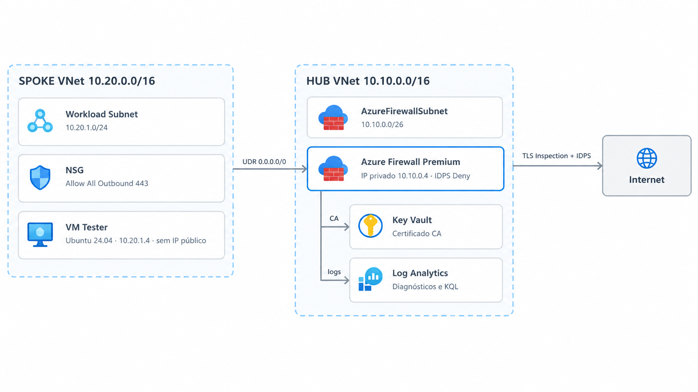

CASE STUDY • AZURE • NETWORK SECURITY • LANDING ZONE
Azure Firewall Premium Lab: IDPS, TLS Inspection e saída inspecionada
Laboratório reproduzível em Terraform que prova onde termina a proteção de um Network Security Group e onde começa a de um firewall de próxima geração, com IDPS em modo Deny, inspeção de TLS com CA própria, políticas hierárquicas e auditoria analítica no Log Analytics.
01
Contexto
Quem desenha uma Landing Zone gasta a maior parte do tempo no tráfego de entrada. Regras de inbound, publicação de aplicação, exposição de endpoint e WAF consomem as decisões difíceis. A saída costuma entrar no fim do projeto, resolvida com uma regra ampla e a frase "depois a gente ajusta".
Só que a saída é justamente por onde passam os eventos que mais doem: exfiltração de dados, comunicação de comando e controle de malware e callback de supply chain. Nenhum deles precisa de porta de entrada aberta. Todos precisam apenas de uma saída permissiva.
O laboratório nasceu de uma pergunta simples e desconfortável: se eu deixo o NSG do workload totalmente aberto na saída, o que exatamente acontece com o tráfego? A resposta separa duas camadas de defesa que muita gente trata como equivalentes.
Demonstrar, com evidência reproduzível, a diferença entre filtrar conexão e inspecionar conteúdo. O ambiente precisa provar que um NSG com a porta 443 liberada deixa passar ameaça cifrada, download de malware e conversa com domínio malicioso hospedado em nuvem legítima.
02
Objetivo
O lab compara duas camadas no mesmo fluxo de tráfego, sem simulação e sem teoria: um Network Security Group e um firewall de próxima geração com inspeção profunda de pacote.
O que o NSG enxerga
Camada 3 e 4 apenas. Endereço IP de origem, endereço IP de destino e porta. Uma regra de Allow para 443 não tem como saber se o conteúdo é uma atualização legítima ou um binário malicioso entregue pelo mesmo CDN.
O que o Firewall Premium enxerga
Decifra o túnel TLS com autoridade certificadora própria, inspeciona o payload da requisição, aplica assinaturas de IDPS em tempo real e derruba a conexão antes do primeiro byte malicioso alcançar a carga de trabalho.
Critério de sucesso
A mesma requisição, saindo da mesma VM, com o mesmo NSG permissivo, precisa ser permitida quando o destino é legítimo e bloqueada quando o destino é malicioso. Se o resultado depende do NSG, a tese do lab não se sustenta.
Escopo
Um hub, um spoke, uma VM de teste e os módulos Terraform que sustentam a topologia. Nada de ambiente multi-região: o objetivo é isolar a variável que está sendo testada.
03
Arquitetura
O desenho é o hub-spoke clássico, com uma diferença deliberada: o firewall não é opcional. A VM do spoke não tem IP público e a tabela de rotas não oferece caminho alternativo. Todo pacote que sai do workload passa pelo endereço privado do firewall no hub.

O NSG do spoke fica propositalmente permissivo na saída, com a porta 443 liberada. Se o tráfego chega ao destino, a defesa veio do firewall. Se o UDR estiver errado, o lab denuncia imediatamente, porque o teste passa a funcionar onde deveria falhar.
04
Hub e Firewall Premium
O hub concentra a decisão. Ele não apenas roteia: ele decide o que pode sair, com que identidade e sob qual política. Quatro capacidades sustentam essa decisão no lab.
IDPS em modo Deny
Assinaturas de intrusão aplicadas ao fluxo inspecionado. No modo Deny a conexão é encerrada quando a assinatura dispara. No modo Alert o evento aparece no log e o pacote segue adiante, o que em laboratório não prova nada.
Inspeção TLS
O firewall apresenta o certificado ao cliente, decifra a sessão, inspeciona o conteúdo e reestabelece a conexão com o destino. Sem isso, o IDPS trabalha vendado em todo tráfego HTTPS.
Política pai herdada
Uma baseline corporativa define o piso de segurança e é herdada pelo firewall regional. A política filha só restringe, nunca afrouxa.
Diagnósticos centralizados
Logs do firewall e da política enviados ao Log Analytics por módulo dedicado, o que mantém a instrumentação separada da definição de infraestrutura.
05
Infrastructure as Code
Nada no lab é criado pelo portal. Toda a topologia é declarativa, o que garante que o experimento possa ser destruído e reconstruído com o mesmo resultado, requisito básico para qualquer laboratório que queira servir de referência.
.
├── providers.tf
├── environments/
│ └── dev/
│ ├── main.tf
│ ├── variables.tf
│ ├── outputs.tf
│ └── terraform.tfvars.example
├── modules/
│ ├── hub/
│ ├── spoke/
│ └── firewall-policy/
├── scripts/
│ ├── generate_ca_and_import.sh
│ └── test_idps_and_tls.sh
└── kql/
├── 01_idps_alerts.kql
├── 02_top_fqdns.kql
├── 03_denied_vs_allowed.kql
├── 04_snat_port_utilization.kql
└── 05_blocked_applications.kqlMódulo hub
Virtual Network, subnet dedicada do firewall, IP público Standard, firewall, política e configuração de diagnósticos.
Módulo spoke
Virtual Network do workload, subnet, NSG permissivo na saída, tabela de rotas com UDR e a VM de teste.
Módulo firewall-policy
Política pai com baseline corporativa, regras de rede e aplicação, configuração de IDPS e referência ao certificado no Key Vault.
Ambiente dev
Composição dos três módulos, variáveis de entrada, outputs e o exemplo de tfvars usado no provisionamento.
O fluxo é sempre o mesmo: gerar a CA, importar no Key Vault, informar
o SECRET_ID no tfvars, rodar terraform init
e aplicar. O state remoto sustenta a reconstrução do ambiente sem
intervenção manual no portal.
06
Políticas hierárquicas
Em ambiente corporativo, o problema raramente é criar a regra. O problema é impedir que ela seja desfeita na próxima sprint por alguém que precisava liberar um acesso às pressas.
A política hierárquica resolve isso pela direção da herança. A política pai define o piso e é aplicada ao firewall de cada hub regional. A política filha herda tudo e só pode acrescentar restrição. Na prática, o time do spoke consegue adicionar uma regra para o domínio específico que aprovou, mas não consegue reabrir a categoria que a fundação bloqueou.
A diferença aparece no dia em que alguém precisa de uma exceção. Com política hierárquica, a exceção vira configuração versionada e revisável. Com tabela de exceções em planilha, ela vira dívida sem dono.
07
Inspeção TLS com CA própria
Inspeção de conteúdo em tráfego cifrado exige participar da negociação. O laboratório gera uma autoridade certificadora raiz e uma intermediária com OpenSSL, empacota em PFX, importa no Key Vault e referencia o segredo na política do firewall.
# Gera CA raiz e intermediária, importa no Key Vault e devolve o SECRET_ID
chmod +x scripts/generate_ca_and_import.sh
./scripts/generate_ca_and_import.sh
# Import direto, quando o PFX já existe
az keyvault certificate import \
--vault-name kv-lab-fw \
--name fw-lab-ca \
--file ca-intermediaria.pfxO firewall apresenta esse certificado ao cliente, decifra a sessão, aplica a inspeção e reestabelece a conexão com o destino real. A VM de teste recebe a CA no trust store, então o curl e o navegador aceitam a cadeia sem aviso, que é exatamente o comportamento esperado em ambiente corporativo com certificado distribuído.
Gerar certificado é a parte fácil. O desenho real inclui distribuir a CA por GPO ou Intune, documentar o ciclo de vida, planejar a rotação e tratar aplicações com certificate pinning, que vão falhar por design e precisam de exceção consciente.
08
Validação de IDPS
A bateria de testes roda dentro da VM do spoke, com o NSG permissivo e sem IP público, o que elimina qualquer rota de fuga. O script automatiza a sequência e registra o resultado de cada requisição.
# Bateria completa de IDPS e TLS, executada dentro da VM
bash scripts/test_idps_and_tls.sh
# Domínio não autorizado pela política: espera-se reset de conexão
curl -v https://exemplo-nao-autorizado.com
# Amostra EICAR: espera-se bloqueio por assinatura de IDPS
curl -O https://secure.eicar.org/eicar.com.txtO teste mais didático é o do arquivo EICAR, amostra padronizada usada para validar detecção antivírus. O NSG não tem como reconhecer aquilo como ameaça, porque não inspeciona conteúdo. O firewall reconhece pela assinatura e encerra a conexão.
Domínio não autorizado
Requisição barrada por política de rede ou aplicação, antes de qualquer avaliação de conteúdo.
Amostra EICAR
Bloqueio por assinatura de IDPS, com severidade e IP de origem registrados no Log Analytics.
Cadeia TLS
Handshake aceito pela VM porque a CA do lab está no trust store, exatamente como em ambiente corporativo.
Resultado comparativo
NSG sozinho: arquivo entregue, nenhum evento. Com Firewall Premium: conexão encerrada e evento de segurança.
09
Auditoria com KQL
Bloquear sem registrar resolve metade do problema. As cinco consultas do repositório cobrem o ciclo de auditoria do egress e foram escritas para rodar direto no Log Analytics provisionado pelo lab.
IDPS alerts
Eventos de intrusão com assinatura, severidade, ação aplicada e IP de origem. Base natural para regra de alerta.
Top FQDNs
Destinos mais acessados pelo spoke, útil para transformar comportamento observado em regra explícita.
Denied vs allowed
Proporção entre tráfego permitido e negado, indicador direto de política apertada demais ou frouxa demais.
SNAT e aplicações bloqueadas
Consumo de portas SNAT, o gargalo silencioso do egress centralizado, e as aplicações barradas por categoria de URL.
Essas consultas são o embrião de um SLO de segurança do egress: volume negado, tentativas repetidas por origem e destinos novos entrando na base a cada semana.
10
Custos e ciclo de vida
Firewall Premium é caro para estudo, e esconder isso seria desonesto. O SKU Premium fica na faixa de USD 1,50 a USD 2,00 por hora, somando firewall, IP público Standard e processamento de dados. Uma sessão de uma a duas horas fica abaixo de USD 5,00.
Custo por hora
USD 1,50 a USD 2,00 com firewall, IP público e dados processados. Firewall Premium não foi feito para ficar ligado sem propósito.
Sessão completa
Menos de USD 5,00 em uma a duas horas de validação, incluindo provisionamento, testes e destruição.
Pré-requisitos
Azure CLI 2.50 ou superior, Terraform 1.6 ou superior, OpenSSL na estação e permissão Contributor ou Owner no resource group.
Destruição obrigatória
O encerramento faz parte do passo a passo. Um lab que ninguém destrói deixa de ser lab e vira dívida na fatura.
cd environments/dev
terraform destroy -auto-approve
# Alternativa direta por resource group
az group delete --name rg-lab-firewall-hub --yes --no-wait
az group delete --name rg-lab-firewall-spoke --yes --no-wait11
Tecnologias
Cloud
Microsoft Azure
Azure Firewall Premium
Azure Key Vault
Azure Bastion
Networking
Hub-Spoke
VNet Peering
User Defined Routes
Network Security Groups
Infrastructure
Terraform
Módulos reutilizáveis
Remote State
OpenSSL
Security & Observability
IDPS
TLS Inspection
Log Analytics
KQL
12
Projeto no GitHub
O laboratório completo está público, com os módulos Terraform, os scripts de geração de CA e teste de IDPS, as consultas KQL e o passo a passo de deploy e destruição.
Terraform
Três módulos, ambiente dev e composição declarativa da topologia.
Scripts
Geração e importação da CA no Key Vault e bateria de testes de IDPS e TLS.
KQL
Cinco consultas de auditoria do egress prontas para o Log Analytics.
Documentação
Arquitetura, pré-requisitos, custos e procedimento de limpeza.
Explore o laboratório completo
Consulte o código e a documentação técnica do Azure Firewall Premium Lab no GitHub. Clone, execute, valide e destrua.